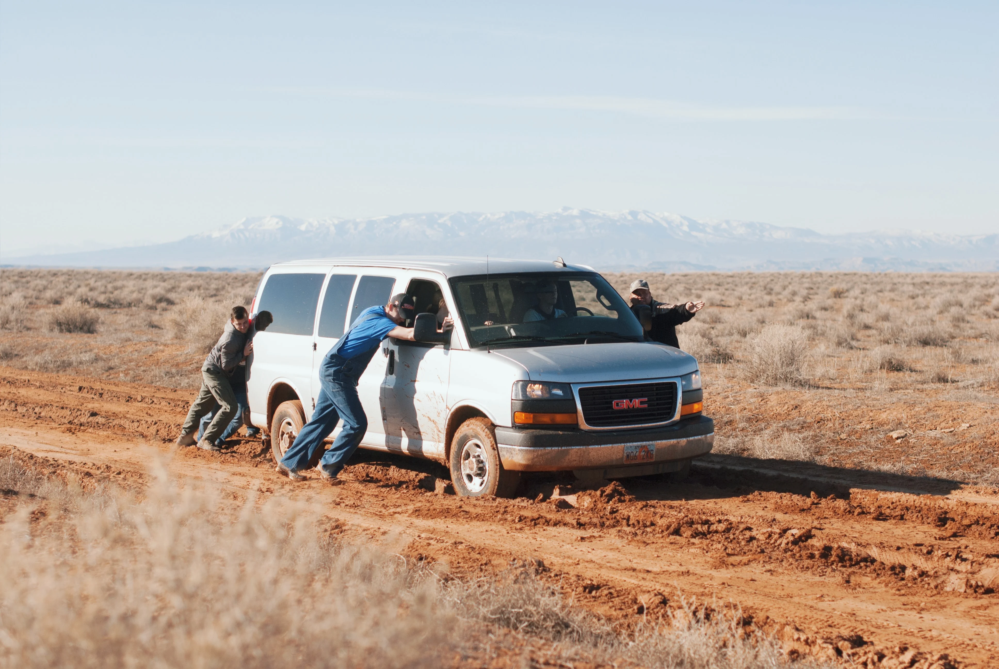
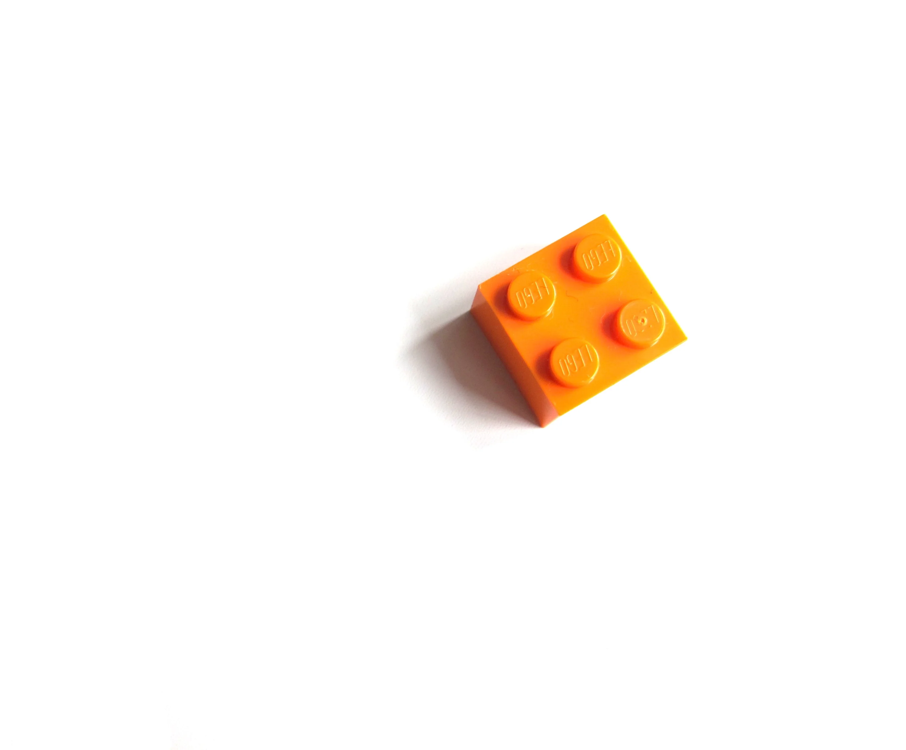
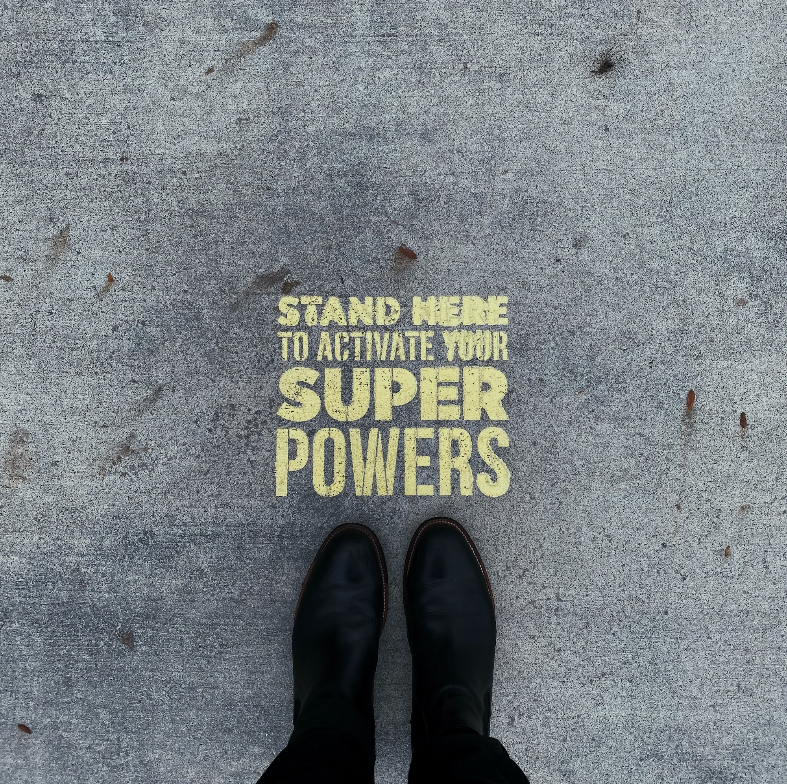

소프트웨어와 테스팅
이론적으로 테스팅은 건설적인 활동이라고 명시하지만, 테스터로서의
경험을 돌이켜보면 분명히 파괴적인 성향을 갖는다.

창조적 활동을 목표로 하는 개발팀원들과 충돌하고, 때로는 꽤 심각한
갈등을 빚는 경우도 발생한다며 이론서에서 경고까지 해줄 정도이다.
아이러니하게도 나는 그 가운데서 테스팅 분야에 매력을 느꼈다.
“재미도 없고 지루하다.”
그 흔한 편견은 별로 중요하게 느껴지지 않았다. 개발팀과 충돌하는
순간마저도 나는 그들과 호흡했다고 주장했고 그 결과물이 이렇게
훌륭하지 않느냐, 뻔뻔하게 응수했다. 성격과 잘 맞았다고 밖에 설명할
방법이 없었다.
스타트업의 이점은 개발팀과 오피스를 공유한다는 것이었다. 조용한
사무실 안, 각자 맡은 바에 충실히 모니터 화면에 얼굴을 박고 있으면
간간히 소소한 대화들이 오고갔다. 그러다 균열이 일어나듯 정갈히
정돈된 웹페이지 안에서 무언가를 발견한다. 자리를 박차고 일어나 당시
개발팀에서 자체 프로덕트를 총괄하던 과장님께 다가가 그의 평화를
깨트렸다.
“과장님, 버그 찾았어요.” 가장 즐거운 순간이었다. 정식으로 리포팅을
할 때보다 이렇게 부러 그를 불러서 노티를 줄 때면 그렇게 즐거울 수가
없었다. 다행히 그는 다소 철없는 그 모습을 인턴의 패기로 받아들여
주었다. (밉지 않게 소통하는 것이 테스터에게 요구되는 자질인 건
분명하다.)
6개월의 인턴쉽 기간 동안 제대로된 테스팅 없이 좋은 소프트웨어는 있을
수 없음을 두 눈으로 확인했다. 소프트웨어를 완성해감에 있어서
테스터가 할 수 있는 역할 자체에 몰입했던 시간이었다.

테스팅이 창조에 기여함을 내세우면서 그것이 가진 파괴적 성질에
열광하는, 그 열의에 소프트웨어 공학 석사 학위를 진행하던 친구도,
개발팀 이사님도, 다른 팀원들까지도 QA를 하나같이 추천했다.
나는 무엇이건 항상 잘하고 싶은 사람이다. 일종의 승부욕 같은, 때로는
무의미할 때도 있는 욕심이 언제나 가득한 그런 사람. 하지만, 감히
진짜로, 더 잘해보고 싶은 무언가가 생겼다고 말할 수 있다.

그림을 보며 그 아름다움에 취해 눈물도 흘렸었던, 이제는 다신 그런
감정을 느끼지 못할 것이라고 확신하던 나에게 찾아온 두 번째
열정이었다.